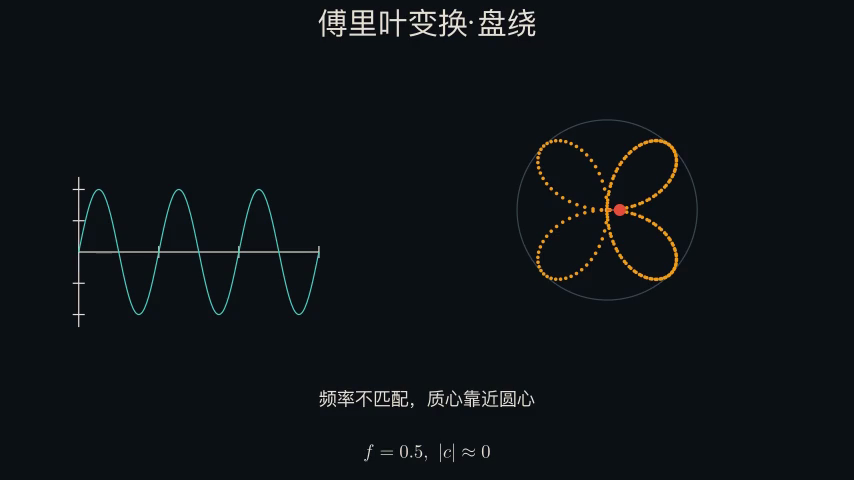
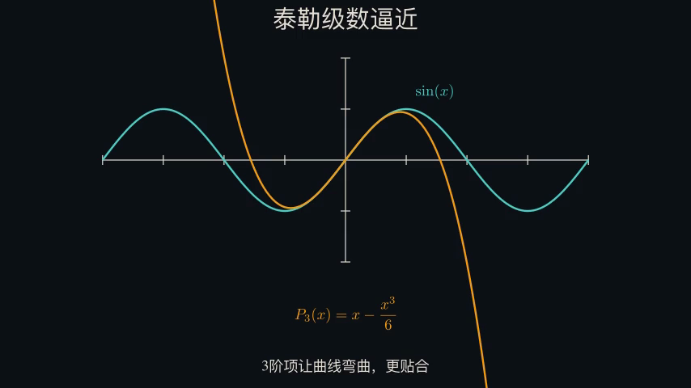
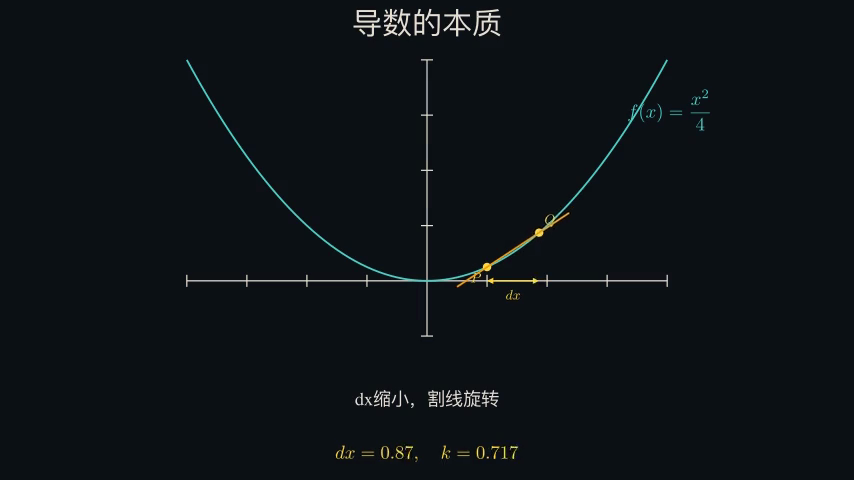
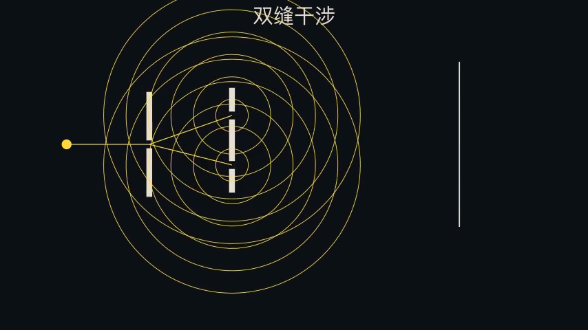
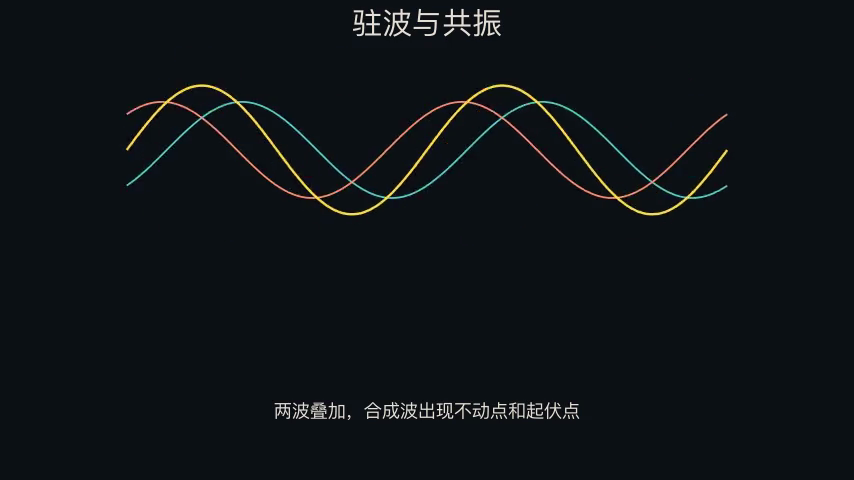
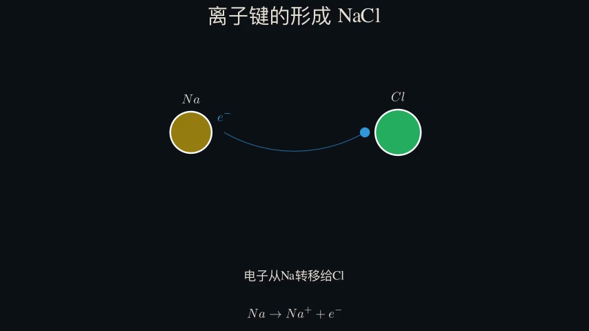

是赋予每一个普通人，从获得信息到迅速行动的能力！
过去，AI 帮我们更快找到信息。现在，它开始帮助我们把想法真正做出来。
过去，会编程才能用 Manim 写动画，用 SymPy 做符号推导，用 Three.js 搭建三维场景，挡住了老师、家长和学习者。他们缺的不是想法、审美或判断，缺的是把这些想法落地的工具通路。
自然语言正在成为新的入口。AI 时代的人机协同，让每一个人不再被代码能力约束——公平地、自由地，用自己的语言和 AI 交流，让模型、代码和工具链一起工作。教育中的可视化表达能力，不再只属于少数技术人。
如今，用 AI 推进教育公平，低成本且高效地解决教育痛点。
教育的公平，是降低门槛——将教学想法，迅速、低成本地落成作品的通路。教育的痛点，是将抽象概念，实现从过往看不见，到看得见的距离。
景礴学院想降低这道门槛。让普通老师从重复劳动里释放出来，把判断、审美和创造力放回教学；让普通家庭获得更直观、更贴近自己问题的解释；让低资源环境里的学习者，不只是看到一段动画，更知道 AI 可以打开一个更大的工具世界。
函数变换、分子结构、物理定律——用语言和静态图很难讲清楚，学生需要在动态画面里才能真正"看见"。
一条好的可视化讲解，需要会设计、会编程、会剪辑，还要配置工具链。过去只有少数人能做到。
Manim、LaTeX、ffmpeg——这些强大的开源工具，对非程序员来说像一座难以翻越的墙。
偏远地区的学习者，可能要花很多年才能接触到那些工具、资源和视野。AI 应该让他们更早看见更大的世界。
一条可执行、可审计的工作流。
不是聊天框，不是无限对话。系统在限定流程里跑完，你看到成品后做判断。输入一个知识点，或者上传一份教案——AI 会理解需求、设计分镜、编写动画代码、渲染视频，全程自动。
人，不是"说一句话然后消失"。每一步都有人的判断、审美和修改权——人负责想清楚要什么，系统负责把繁琐的工具链跑通。
说清楚想讲什么，可补充偏好和约束
把抽象概念拆成可观看的步骤
调用 Manim 脚手架生成可执行代码
在你的电脑上调用 Manim 和 ffmpeg
抽帧检查文字、布局、节奏和边界
审计结果透明展示，5 帧逐条标注
你判断是否修改，AI 预估成本等你确认
满意即输出，可下载、可复用






景礴学院要连接的不是一个动画库，而是一整个可以被教育者使用的工具世界。未来，同一个自然语言入口，可以帮助大家做更多事。
符号运算、交互几何、2D 物理引擎——让公式不只是写在黑板上，而是动起来。
3D 分子结构、化学反应可视化——原子和键不再靠想象。
在浏览器里跑的 3D 场景、数据可视化、创意动画。
视频生成、语音合成、3D 建模——一站式 API 编排，AI 直接调用。